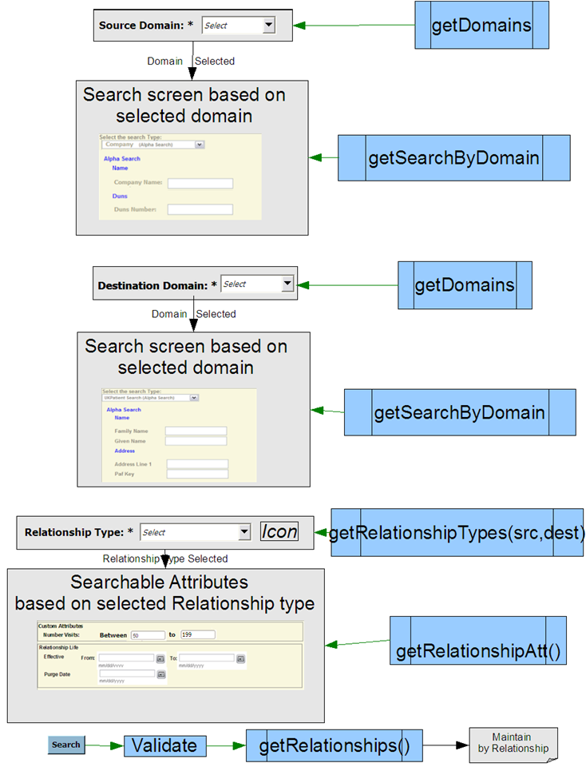

Screen Flow -
Manage->Relationship->Maintain->By Record
Search For Relationship Records
Note: The following API names are conceptual and are expected to be refined and even changed.

Note: The search button fills in the relationship values shown in the main screen's relationship table.
This page last
changed on 12-Sept-2008
07:47:00 PDT by andreakendall@dev.java.net